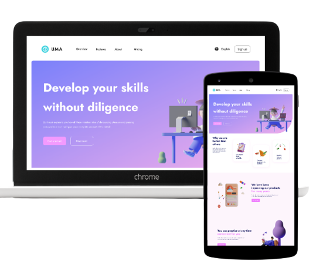

Projects

UMA
UMA is a website I built from scratch using HTML, CSS and JavaScript, Its yet to be deployed on the internet, I Used it to develop the ability to convert a figma design into an html,css project. I believe with my expertise and quest to learn more that I can become even better.

UX designs
These are samples of my ux designs. they all followed the principle of card-based designs system. The primary goal of conducting a card-based design in UI/UX is to create a modular and flexible user interface that presents information in bite-sized, visually appealing, and easily digestible chunks.

Mobile UX designs
These are samples of my mobile ux designs. they .